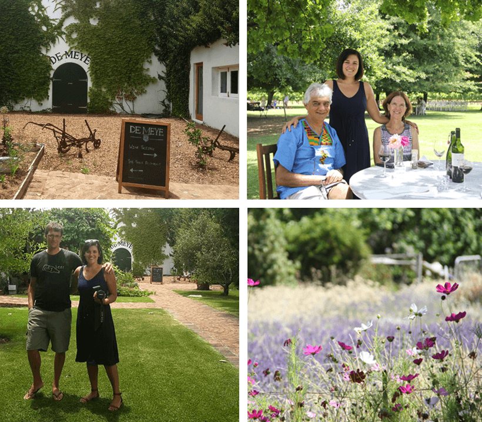

Even though we both studied at Rhodes University and lived down the road from each other's residences, our paths only properly crossed when we both took the leap to join the many South Africans living and working in London. In June 2008, Van decided to join a mutual friend, Greg Smith on a last minute trip to Ireland with a group of his friends and this is where they met properly.
My first impression of Duncan was that he was a bit quiet, quirky, and liked to laugh - Vanessa
Here was this girl from Rhodes joining us, taking a flight by herself, staying in a backpackers by herself. I was impressed by her confidence before we even met - Duncan
We landed up flying back on the same flight together. We spent our last few euros on kitkats and Irish touristy trinklets whilst getting over our guiness hangovers.
I remember wishing that the tube ride was longer so that we could spend more time together! - Vanessa
I remember thinking about when the right time to ask for her number was - Duncan
It wasn't long after that we became an item :) The rest is history! Together we've travelled, laughed, made new friends, started new jobs, struggled in new countries, retuned to South Africa and our motto has always been "Home is wherever I'm with you". We're both very excited for our new chapter to begin as husband and wife
The Table at De Meye is a lovely restaurant run by an awesome couple, Jess Shepherd and Luke Grant. Together they create a relaxed, inviting atmosphere. Think rustic farm food with the best locally sourced ingredients and set in a tranquil garden under shady trees.
Take the N1 towards Paarl. Take Exit 39 marked Stellenbosch/Klipheuwel and turn right towards Stellenbosch. Pass the entrance to Klein Joostenberg which is on your left. Take the first left at Sandringham Close towards Paarl (R101). Pass Eaglesvlei and look for the next right marked Muldersvlei/Elsenberg. Turn right. The first gate on your left is De Meye – it has brown info boards to help.
The venue is just 40 minutes from Cape Town, and not too far from both Paarl and Stellenbosch. If you're interested in staying a bit closer to the venue, here are a couple options:
Safari Now has some more options.
We'll be having a afternoon/evening braai at Oakleaf Lodge. If you're staying in the area, or feel like coming through, please let us know on the RSVP. We'll put up more information closer to the time.
Ceremony: The bride will be walking down the aisle at 3.30PM at De Meye Wine Farm.
Reception: After the ceremony, there will lawn games, drinks and canapes in the garden followed by dinner.
Attire: Dress is formal, but don't feel obliged to wear a full suit or tie. Comfy shoes are encouraged, and also be sure to bring something warm for the evening.
If you're into wine and admiring the scenery like we are, then you should check out some of our favourites in the area:
Some other things to do: